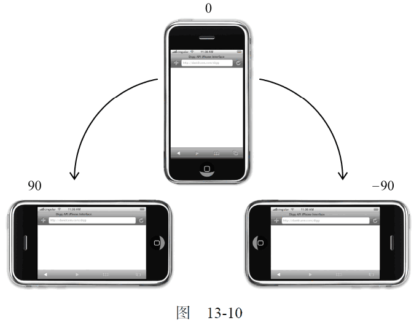
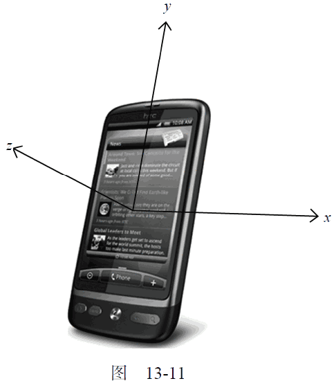
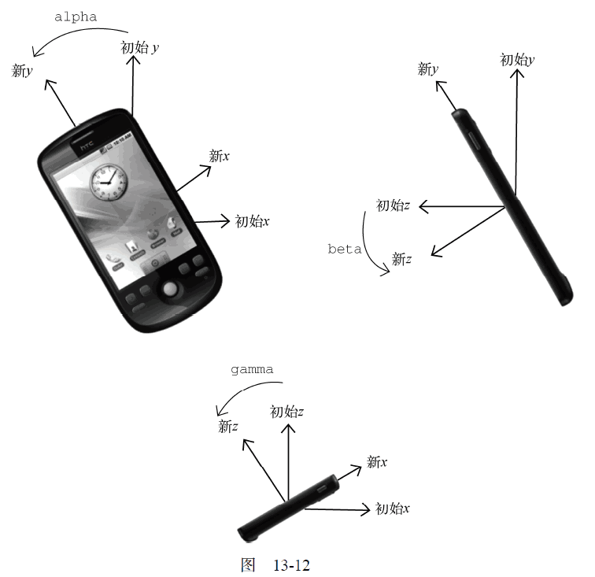

13.4.8 设备事件
智能手机和平板电脑的普及，为用户与浏览器交互引入了一种新的方式，而一类新事件也应运而生。
设备事件（device event）可以让开发人员确定用户在怎样使用设备。W3C 从2011 年开始着手制定一份关于设备事件的新草案（
http://dev.w3.org/geo/api/spec-source-orientation.html），以涵盖不断增长的设备类型并为它们定义相关的事件。本节会同时讨论这份草案中涉及的API 和特定于浏览器开发商的事件。
1. orientationchange 事件
苹果公司为移动Safari 中添加了orientationchange 事件，以便开发人员能够确定用户何时将设备由横向查看模式切换为纵向查看模式。移动Safari 的window.orientation 属性中可能包含3 个值：
0 表示肖像模式，90 表示向左旋转的横向模式（“主屏幕”按钮在右侧），-90 表示向右旋转的横向模式（“主屏幕”按钮在左侧）。相关文档中还提到一个值，即180 表示iPhone 头朝下；但这种模式至今尚未得到支持。图13-10 展示了window.orientation 的每个值的含义。

只要用户改变了设备的查看模式，就会触发orientationchange 事件。此时的event 对象不包含任何有价值的信息，因为唯一相关的信息可以通过window.orientation 访问到。下面是使用这个事件的典型示例。
EventUtil.addHandler(window, "load",
function(event) {
var div = document.getElementById("myDiv");
div.innerHTML = "Current orientation is " + window.orientation;
EventUtil.addHandler(window, "orientationchange",
function(event) {
div.innerHTML = "Current orientation is " + window.orientation;
});
});
运行一下
在这个例子中，当触发load 事件时会显示最初的方向信息。然后，添加了处理orientationchange事件的处理程序。只要发生这个事件，就会有表示新方向的信息更新页面中的消息。
所有iOS 设备都支持orientationchange 事件和window.orientation 属性。
由于可以将orientationchange 看成window 事件，所以也可以通过指定<body>元素的onorientationchange 特性来指定事件处理程序。
2. MozOrientation 事件
Firefox 3.6 为检测设备的方向引入了一个名为MozOrientation 的新事件。（前缀Moz 表示这是特定于浏览器开发商的事件，不是标准事件。）当设备的加速计检测到设备方向改变时，就会触发这个事件。但这个事件与iOS 中的orientationchange 事件不同，该事件只能提供一个平面的方向变化。由于MozOrientation 事件是在window 对象上触发的，所以可以使用以下代码来处理。
EventUtil.addHandler(window, "MozOrientation", function(event){
//响应事件
});
此时的event 对象包含三个属性：x、y 和z。这几个属性的值都介于1 到-1 之间，表示不同坐标轴上的方向。在静止状态下，x 值为0，y 值为0，z 值为1（表示设备处于竖直状态）。如果设备向右倾斜，x 值会减小；反之，向左倾斜，x 值会增大。类似地，如果设备向远离用户的方向倾斜，y 值会减小，向接近用户的方向倾斜，y 值会增大。z 轴检测垂直加速度度，1 表示静止不动，在设备移动时值会减小。（失重状态下值为0。）以下是输出这三个值的一个简单的例子。
EventUtil.addHandler(window, "MozOrientation", function(event){
var output = document.getElementById("output");
output.innerHTML = "X=" + event.x + ", Y=" + event.y + ", Z=" + event.z +"<br>";
});
运行一下
只有带加速计的设备才支持MozOrientation 事件，包括Macbook、Lenovo Thinkpad、WindowsMobile 和Android 设备。请大家注意，这是一个实验性API，将来可能会变（可能会被其他事件取代）。
3. deviceorientation 事件
本质上，DeviceOrientation Event 规范定义的deviceorientation 事件与MozOrientation 事件类似。它也是在加速计检测到设备方向变化时在window 对象上触发，而且具有与MozOrientation 事件相同的支持限制。不过，deviceorientation 事件的意图是告诉开发人员设备在空间中朝向哪儿，而不是如何移动。
设备在三维空间中是靠x、y 和z 轴来定位的。当设备静止放在水平表面上时，这三个值都是0。x轴方向是从左往右，y 轴方向是从下往上，z 轴方向是从后往前（参见图13-11）。

触发deviceorientation 事件时，事件对象中包含着每个轴相对于设备静止状态下发生变化的信息。事件对象包含以下5 个属性。
-
alpha：在围绕z 轴旋转时（即左右旋转时），y 轴的度数差；是一个介于0 到360 之间的浮点数。
-
beta：在围绕x 轴旋转时（即前后旋转时），z 轴的度数差；是一个介于-180 到180 之间的浮点数。
-
gamma：在围绕y 轴旋转时（即扭转设备时），z 轴的度数差；是一个介于-90 到90 之间的浮点数。
-
absolute：布尔值，表示设备是否返回一个绝对值。
-
compassCalibrated：布尔值，表示设备的指南针是否校准过。
图13-12 是alpha、beta 和gamma 值含义的示意图。
下面是一个输出alpha、beta 和gamma 值的例子。
EventUtil.addHandler(window, "deviceorientation",
function(event) {
var output = document.getElementById("output");
output.innerHTML = "Alpha=" + event.alpha + ", Beta=" + event.beta + ", Gamma=" + event.gamma + "<br>";
});
运行一下
通过这些信息，可以响应设备的方向，重新排列或修改屏幕上的元素。要响应设备方向的改变而旋转元素，可以参考如下代码。
EventUtil.addHandler(window, "deviceorientation",
function(event) {
var arrow = document.getElementById("arrow");
arrow.style.webkitTransform = "rotate(" + Math.round(event.alpha) + "deg)";
});
运行一下

这个例子只能在移动WebKit 浏览器中运行，因为它使用了专有的webkitTransform 属性（即CSS标准属性transform 的临时版）。元素“arrow”会随着event.alpha 值的变化而旋转，给人一种指南针的感觉。为了保证旋转平滑，这里的CSS3 变换使用了舍入之后的值。
到2011 年，支持deviceorientation 事件的浏览器有iOS 4.2+中的Safari、Chrome 和Android 版WebKit。
4. devicemotion 事件
DeviceOrientation Event 规范还定义了一个devicemotion 事件。这个事件是要告诉开发人员设备什么时候移动，而不仅仅是设备方向如何改变。例如，通过devicemotion 能够检测到设备是不是正在往下掉，或者是不是被走着的人拿在手里。
触发devicemotion 事件时，事件对象包含以下属性。
-
acceleration：一个包含x、y 和z 属性的对象，在不考虑重力的情况下，告诉你在每个方向上的加速度。
-
accelerationIncludingGravity：一个包含x、y 和z 属性的对象，在考虑z 轴自然重力加速度的情况下，告诉你在每个方向上的加速度。
-
interval：以毫秒表示的时间值，必须在另一个devicemotion 事件触发前传入。这个值在每个事件中应该是一个常量。
-
rotationRate：一个包含表示方向的alpha、beta 和gamma 属性的对象。
如果读取不到acceleration、accelerationIncludingGravity 和rotationRate 值，则它们的值为null。因此，在使用这三个属性之前，应该先检测确定它们的值不是null。例如：
EventUtil.addHandler(window, "devicemotion",
function(event) {
var output = document.getElementById("output");
if (event.rotationRate !== null) {
output.innerHTML += "Alpha=" + event.rotationRate.alpha + ", Beta=" + event.rotationRate.beta + ", Gamma=" + event.rotationRate.gamma;
}
});
运行一下
与deviceorientation 事件类似，只有iOS 4.2+中的Safari、Chrome 和Android 版WebKit 实现了devicemotion 事件。